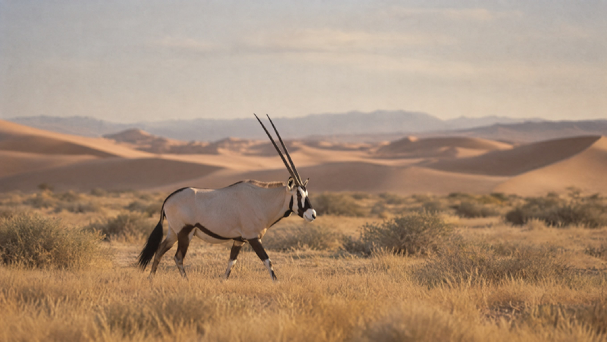
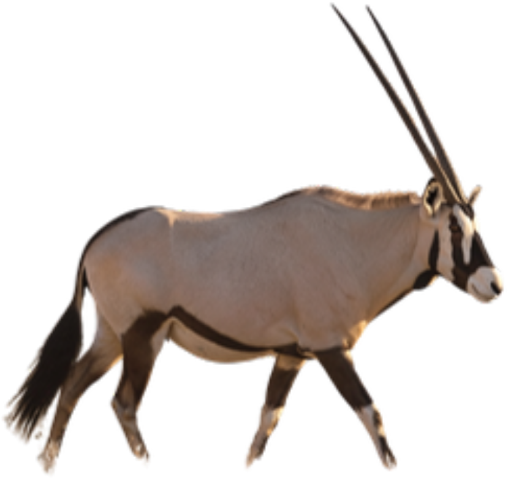
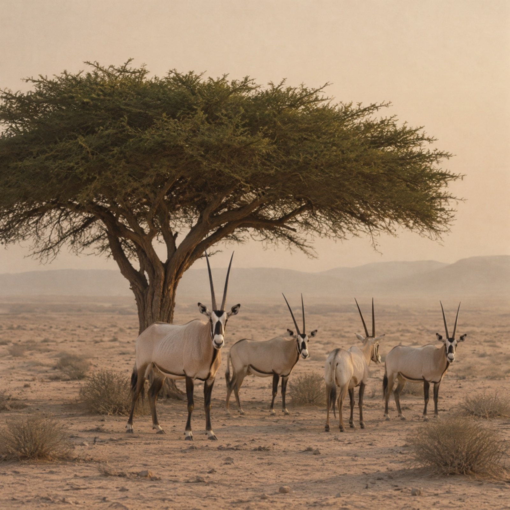
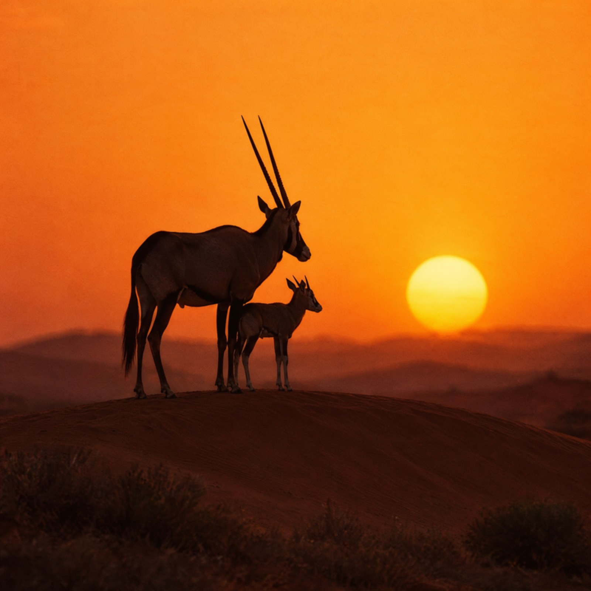
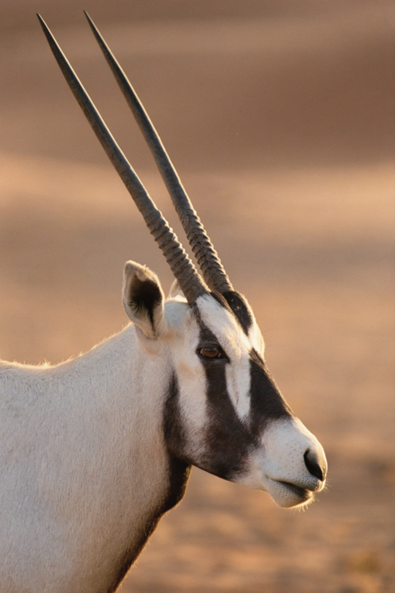

The oryx in Arabia

From Extinction
In The WildOryx
The Arabian oryx was hunted out of the wild by 1972. Bred back from a handful of animals and released into Saudi reserves such as Mahazat as-Sayd and ʿUruq Bani Maʿarid, it became the first species ever to return from Extinct in the Wild. A white shape built for heat, it can go weeks without drinking, and its small herds hold the long quiet of the sand.
| Habitat | Gravel plains and sand desert |
|---|---|
| Scientific name | Oryx leucoryx |
| Shoulder height | About 1 metre |
| IUCN status | Vulnerable |
